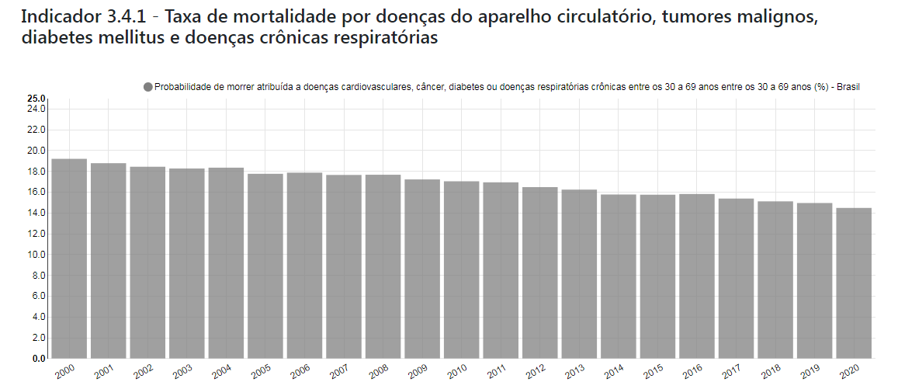

- O.D.S.-3
Saúde e Bem Estar
Objetivo de Desenvolvimento Sustentável
3.4
Nações Unidas: Até 2030, reduzir em um terço a mortalidade prematura por doenças não transmissíveis via prevenção e tratamento, e promover a saúde mental e o bem-estar.
Brasil: Até 2030, reduzir em um terço a mortalidade prematura por doenças não transmissíveis via prevenção e tratamento, promover a saúde mental e o bem-estar, a saúde do trabalhador e da trabalhadora, e prevenir o suicídio, alterando significativamente a tendência de aumento.
Indicadores
3.4.1 - Taxa de mortalidade por doenças do aparelho circulatório, tumores malignos, diabetes mellitus e doenças crônicas respiratórias
3.4.2 - PTaxa de mortalidade por suicídio
